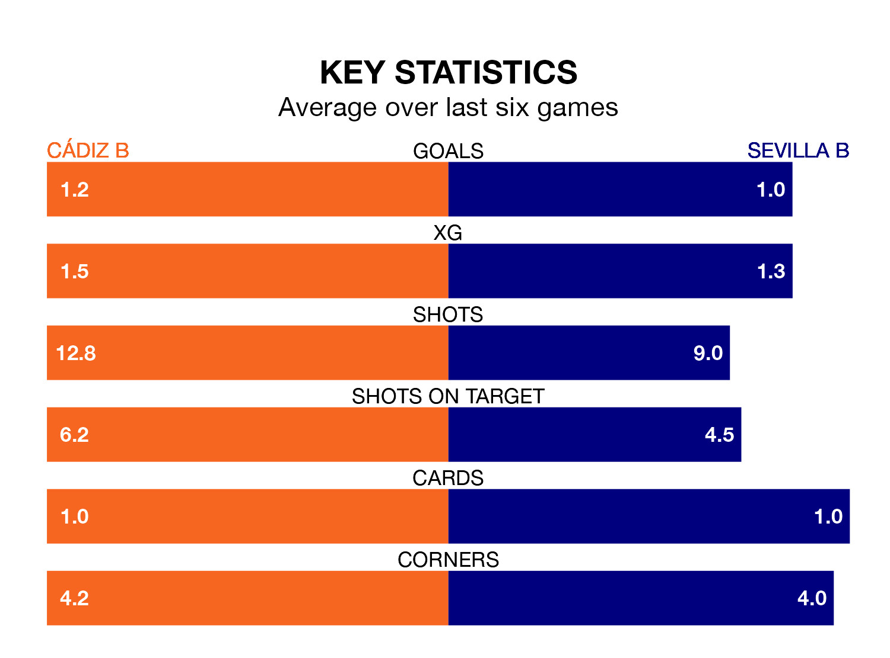

Sunday's early match between Cádiz B and Sevilla B promises to be one for the neutrals, as two of the Segunda División RFEF Group 4's most free-scoring sides go head-to-head.
Ahead of the game, Cádiz B and Sevilla B sit fourth and top in the goal-scoring charts, with 29 and 42 goals respectively.
Midfielder Karl Edouard Blaise Etta Eyong leads the way for the home side, having bagged 11 goals in their 26 games to date.
And Isaac Romero Bernal has been the main man in the opponents' penalty box for Sevilla B, with nine goals.
Sevilla B are top of the table after 26 games, of which they have won 14 and drawn nine, earning 51 points.
Cádiz B are nine places behind the away team in 10th, with seven wins and 11 draws putting them on 32 points.
In the last five years, Cádiz B and Sevilla B have played each other on five occasions. Cádiz B won two of them and Sevilla B three.
On average, Cádiz B scored 0.6 goals and Sevilla B 1.6 in those matches.
Their last meeting was on November 5, when Sevilla B won 5-0 at home.
The hosts are in mixed form in the Segunda División RFEF Group 4, with one win and four draws from their last six games.
With two wins and four draws over that period, Sevilla B's form is better – they have taken 10 points from 18, compared to Cádiz B's seven.
Cádiz B's last match was on March 10, a 1-1 draw against CD San Roque de Lepe, with Borja Vazquez Doña getting the goal for Cádiz B.
Sevilla B beat Union Estepona CF 1-0 last time out, on March 9, with Israel Dominguez Velasco on the scoresheet.
Updated: 15:10 (UTC), 15/03/24